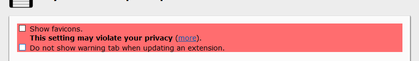

MySessions
Dear Friends and Users of my addon.
I received a letter from the representative of Mozilla, quoting it completely.
After fighting for the lives of children...
I'll handle the difficulties myself! But I could use any help:


Read more ...
| Hello, Andreas Wagner, a reviewer at addons.mozilla.org, found an issue when reviewing version 2020.9.0 of the add-on MySessions and requests additional information. You are receiving this email because you are listed as an author of this add-on. ********* Andreas Wagner wrote: We’re writing to you because we received reports of your extension negatively impacting users that also have Firefox Sync enabled. It seems MySessions deletes and creates new bookmarks on a timer every 5 minutes, resulting in millions of tombstone records ( https://en.wikipedia.org/wiki/Tombstone_(data_store) ) that Sync needs to save and replicate to its servers and all other synced Firefox clients. For some users, this has prevented syncing of bookmarks and the sync process from ever finishing. This is a misuse of the bookmarks API for something it was not intended for, and has come in conflict with one of our policies: * Add-ons must not negatively impact the performance or stability of Firefox. * We would like to work with you toward resolving this issue for our users. We recommend you switch to using storage.local ( https://developer.mozilla.org/en-US/docs/Mozilla/Add-ons/WebExtensions/API/storage/local ), IndexedDB (or even storage.sync if the quotas work for your use case), they were all designed to be reliable storage. If you’re worried about the safety of permanent storage, an alternative is using the downloads API ( https://developer.mozilla.org/en-US/docs/Mozilla/Add-ons/WebExtensions/API/downloads/download ) to silently save session backups in the background every 5 minutes. A minor inconvenience of this approach would be that users would need to locate those files in case your main local storage gets corrupted, but this should only happen in exceptional circumstances. Please let us know if you have any questions, or would need some additional guidance from us |
By this, I temporarily disable the autosave feature.
Use the TimeLine as AutoSave.

To disable the display of this tab - select "Do not show warning tab when updating an extension."
This extension does not collect cookies,
passwords, emails or any other sensitive information. Only domain names
(not full URLs) of the websites you visit (if you allow) and
nothing else!
Thank you for your support and understanding.
Bug report or suggestions? Go to email.